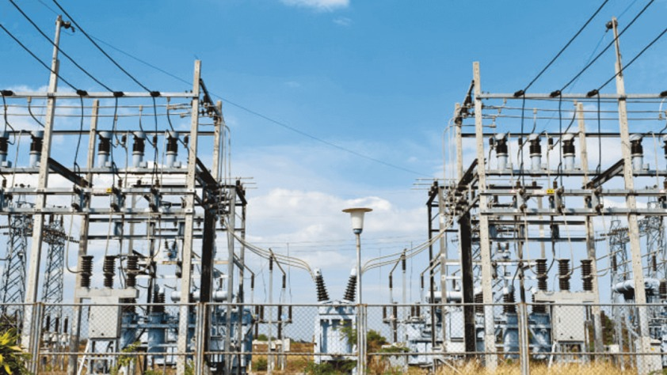

By: K. Vanibharathi
In Ahil Green Energie, we learned about the production and distribution of electricity. In this process of producing electricity, the sun is the main source of energy. The total capacity of the plant is 8MW. The main aim is to produce current by irradiation. A Total of 33,000 volts is produced and supplied to the Electricity Board.
A module comprising multiple cells, which are the basic elements, connected over a panel and protected by glass and so on. Modules joined in series arrangement are known as string. There are 60 modules combined in series in one string. The string voltage is the power generation system DC voltage, and DC current of a certain capacity from strings connected in parallel is inputted to an inventor where it is converted to AC power and outputted
An inverter converts the DC electricity from sources such as batteries or fuel cells to AC electricity. The electricity can be at any required voltage; in particular it can operate AC equipment designed for mains operation, or rectified to produce DC at any desired voltage. The inventor's incoming voltage is 1500DC voltage. The 1500V of active power in SMB is transferred to the Inventor through 300 sq mm (macro poly cab) cable. The outcoming Inventor voltage is 1500 AC voltage. The plant capacity is 8MW. This plant contains 6MW. Each inventor produces 2MW. Aluminium Bustuck is used to minimise the loss.
The one Bus duct contains 3 RYB bases. Therefore, the three inventors contain 9 RYB. Finally the 9 RYB is converted into one. The 1500 voltage is converted into 690 and transferred to the transformer using bus duct. The bus duct is connected in the LV side of the transformer
It is mainly used in power distribution systems to step up or step down power voltage and transmitted over long distances. In the case of an inverter-duty transformer, it is built to handle high-frequency and high-voltage transmissions transmitted by inverters.
The full form of HT panel is High Tension panel.HT panel is a metal enclosure fitted with HT Circuit Breakers, relays & metering that is used to receive 11KV/33KV supply (from one or more source) & distribute the power through its outgoing feeders. Outgoing feeder may be one or more it depends on the load of the building. Full form of HT panel is High Tension Panel. It is installed in Electrical substations of Commercial complexes, residential colonies, factories, schools, hospitals etc. to receive & distribute HT supply.
HT Cables are High Tension Cables or High Voltage cables. These are used for electric power transmission at high voltage. A cable includes a conductor and insulation and is suitable for being run underground or underwater.
Access to high-voltage transmission lines is key for the development of utility-scale solar power projects, as transmission lines are what move the power from where the electricity is generated to where it is consumed. A transmission line is the channel or medium through which the transmission and distribution of electric power occurs. It consists of a metal structure that acts as a support for electrical conductors through which energy is transmitted over long distances. Transmission lines can either be located overhead or underground. Overhead transmission lines are bare conductors above the ground level, supported by pylons and poles. The major parameter classifying overhead transmission lines is their length.
Four pole main & tie breakers eliminate the need for complex ground fault systems. The neutral is not solidly tied to more than one grounding point, and is switched with the phase conductors by the four pole breakers.
In solar power plants, the electricity that is generated by the solar panels is sent to the main substation through the use of feeders. The energy can either be fed into the grid or used locally after being stored at that location. The DC electricity is converted into AC power by the inverter, and the feeder then transports that power to the main substation. The feeders are often constructed using big cables or conductors that are able to transport a significant amount of electricity over considerable distances. Due to the fact that they are constructed to resist high voltages and currents, they are normally either put below ground or linked to existing power lines. Feeders are required to be used in solar power plants in order to ensure that the plants run dependably and effectively. They make it possible to gather and transmit solar energy from the arrays to the central substation, where it can either be utilized to satisfy the energy requirements of the community or transmitted into the electrical grid.
The Module Mounting Structure (MMS) designed for the proposed Solar PV Project is crafted to allow easy installation of Solar PV Modules. The structure is designed for simple mechanical and electrical installation, supporting SPV modules at a given orientation (8 degrees) to absorb and transfer mechanical loads to the ground efficiently. The installation of a number of MMS for a Solar PV Project is referred to as an Array.
The array is designed to occupy minimal space without sacrificing the output from SPV panels while withstanding severe cyclonic storms with wind speeds up to a maximum of 150 km per hour. Nuts, bolts, and supporting structures, including Module Mounting Structures, must be adequately protected against the prevailing atmosphere and weather in the area.
Before the installation of MMS, proper site survey (Topo & Contour Survey) needs to be completed for marking the piles for the legs of MMS.
The MCR room, the primary control room, should be at least 150-200 sq. m in size. It's essential to ensure that all areas of the control room building are well-designed and equipped with the necessary amenities to ensure the smooth and efficient operation of the solar power plant.
The Main Control Room shall consist of the SCADA, which is the software controlling the solar plant and reading of the equipment, Control Room, Battery/Auxiliary Room, and Administration Room. The entire building shall be provided with fire protection using a Cylinder (CO2) system.
The complete Power Plant shall consist of one inverter station block with a 3.00 MW power station.
The 690V AC output from Inverter terminals shall be further stepped up to 33 kV by Inverter Transformers located adjacent to the Inverter Rooms.
An Indicative Electrical Single Line Diagram for the Complete Plant has been presented in Annexure 5 of this document. The following report will come to our respective mail and message.